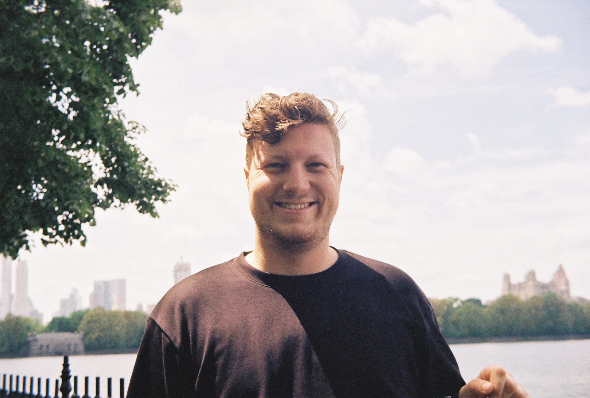

Persönlich
Über mich
Yanik Lüscher
Ich bin Yanik – gerne draussen, immer auf der Suche nach neuen Wegen und am liebsten auf zwei Rädern unterwegs. Für mich bedeutet Fahrradfahren Freiheit, Ausgleich und die Möglichkeit, Neues zu entdecken.
Mit meinem Stevens Tabor beginnt jede Fahrt mit einer offenen Richtung und der Lust, einfach loszufahren.
Minimalistisch im Design, vielseitig auf jedem Weg. Das Stevens Tabor steht für Freiheit, Abenteuer und die Möglichkeit, einfach loszufahren. Genau das macht es für mich besonders.
Hesch lust uf en gmeinsame Ride?
Meld dich bi mier